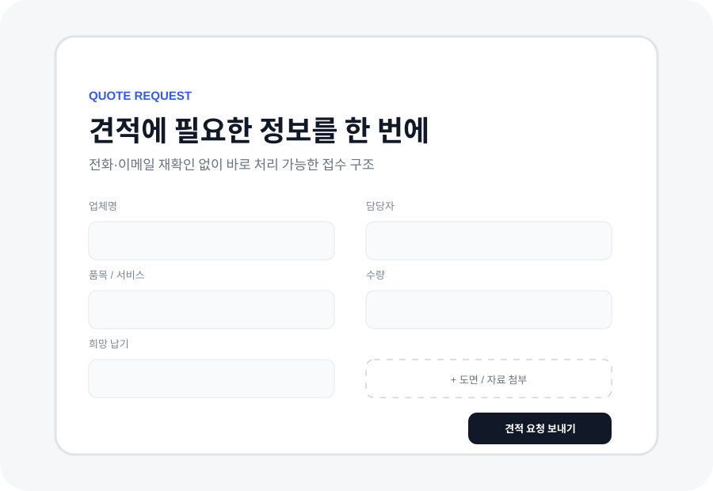

INQUIRY / QUOTE문의는
문의는
처음부터 구조화.
품목·수량·납기·파일을 고객이 처음부터 보내게 만듭니다. 접수 페이지 1개부터 작게 시작합니다.
무료 5분 진단은 방향 확인까지 · 제작은 범위 합의 후 작은 유료 작업으로 시작합니다.

전화정보를 다시 물음
이메일형식이 제각각
첨부자료 누락
납기희망일 재확인
FLOW
한 번에 받습니다.
회사·담당자→품목·서비스→수량·납기→파일 첨부→문의내용
※ 구조 설명용 샘플이며 실제 고객 작업이 아닙니다.
CM
EXPAND LATER
접수 페이지 1개부터 시작합니다.
먼저 문의 흐름을 정리하고, 실제로 반복되는 일이 확인되면 시트 저장 → 담당자 알림 → 자동회신 → CRM·자동화로 확장합니다.
기존 문의방식 유지작은 유료 파일럿필요 시 자동화불필요한 구축 없음
START SMALL지금 문의받는
카카오톡 5분 진단 →지금 문의받는
방식만 알려주세요.
5분 진단으로 빠진 정보부터 확인하고, 범위 합의 후 접수 페이지 1개부터 유료로 정리합니다.